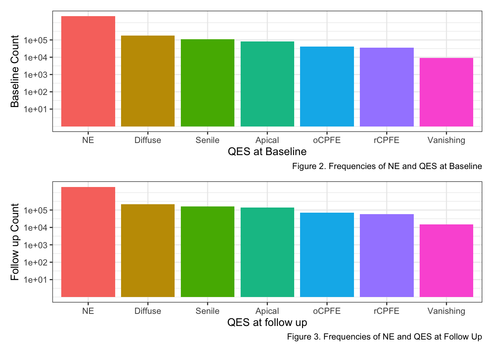
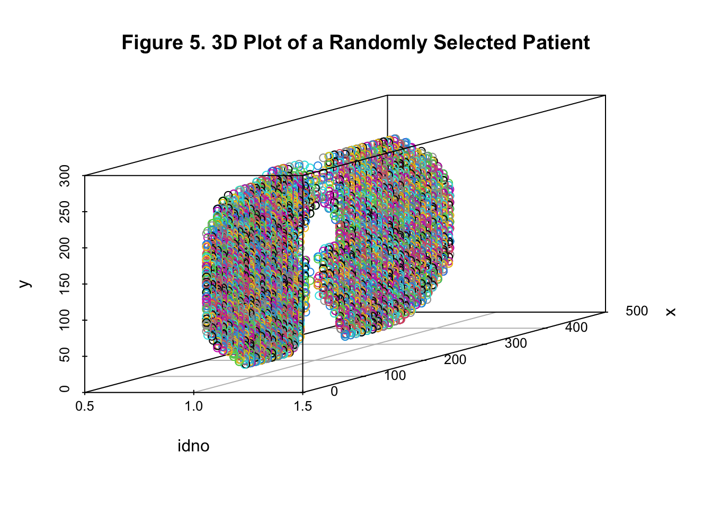

COPD - Analysis
Clement Mugenzi
10/16/2020
Introduction
This document explore the longitudinal progression of emphysema subtypes (sLTPs/QES) over time - from either baseline or any other QES form to after 5 or 6 years later and so on. The dataset is comprised of CT scans from COPD patients.
Different patients have different proportions on emphysema, so that is why also different pixels (corresponding to the number of observations) were recorded - What I call multiple measures. In other words, different patients had different number of QES pixels labeled for their lungs.
Data Description:
IDNO: Patient ID Number
X,Y,Z: Pixel coordinates
sLTP(COPD1);NE = -1: Baseline Spatially-Informed Lung Texture Patterns, where -1 means ‘No Emphysema’ and where sLTPs span a 1-10 range.
sLTP(COPD2);NE = -1: Spatially-Informed Lung Texture Patterns at follow up.
Key Definitions: NE = No Emphyesema
copd_df = fread("Data/spatial-temporal_mesa_copd.csv", data.table = F) %>%
janitor::clean_names() %>%
dplyr::select(-v8,-dice) %>%
rename(sLTP_baseline = s_ltp_copd1_ne_1,
sLTP_follow_up = s_ltp_copd2_ne_1) %>%
mutate(
sLTP_baseline = factor(sLTP_baseline, levels = c("-1","1","2","3","4",
"5","6","7","8","9","10")),
sLTP_follow_up = factor(sLTP_follow_up, levels = c("-1","1","2","3","4",
"5","6","7","8","9","10")),
x = as.numeric(unlist(x)),
y = as.numeric(unlist(y)),
z = as.numeric(unlist(z)),
qes_baseline = recode(sLTP_baseline, "-1" = "NE", "4" = "Diffuse", "6" = "Diffuse", "7" = "Senile",
"3" = "Apical", "5" = "Apical", "9" = "Apical",
"8" = "oCPFE", "10" = "rCPFE",
"1" = "Vanishing", "2" = "Vanishing"),
qes_follow_up = recode(sLTP_follow_up, "-1" = "NE", "4" = "Diffuse", "6" = "Diffuse", "7" = "Senile",
"3" = "Apical", "5" = "Apical", "9" = "Apical",
"8" = "oCPFE", "10" = "rCPFE",
"1" = "Vanishing", "2" = "Vanishing")
)## Warning in fread("Data/spatial-temporal_mesa_copd.csv", data.table = F):
## Detected 8 column names but the data has 7 columns. Filling rows automatically.
## Set fill=TRUE explicitly to avoid this warning.Exploratory Data Analysis
No Emphysema (NE) is Included
The IDNO variable
Number of patients (including those with NE):
I will count the number of patients by counting distinct IDs.
copd_df %>%
summarise(n = n_distinct(idno))## n
## 1 126There are 126 patients with differing CT scans measurements.
Next, we explore patients who were eliminated due to the elimination of unwanted multiple lung locations in the dataset. In brief, transitions from QES to NE constituted the entirety of the multiple measurements we did not want to include in the research study. Therefore, this research only included valid transitions, meaning NE to NE, NE to QES, and QES to QES.
# the dataset we want
copd_wewant = copd_df %>%
filter(!(qes_baseline != "NE" & qes_follow_up == "NE")) %>%
mutate(idno = as_factor(idno))Basic Statistics
# Descriptive stats
tab1_controls = tableby.control(
total = T,
test = T,
numeric.stats = c("meansd", "medianq1q3", "range"),
cat.stats = "countpct",
stats.labels = list(
meansd = "Mean (SD)",
medianq1q3 = "Median (Q1, Q3)",
range = "Min - Max",
countpct = "N (%)"))
tab1 = tableby(~ x + y + z + qes_baseline + qes_follow_up,
data = copd_wewant, control = tab1_controls)
summary(tab1, title = 'Descriptive Statistics', digits = 2, text = T)| Overall (N=2808544) | |
|---|---|
| x | |
| - Mean (SD) | 211.70 (114.25) |
| - Median (Q1, Q3) | 237.00 (102.00, 311.00) |
| - Min - Max | 21.00 - 462.00 |
| y | |
| - Mean (SD) | 132.15 (65.32) |
| - Median (Q1, Q3) | 124.00 (79.00, 180.00) |
| - Min - Max | 18.00 - 342.00 |
| z | |
| - Mean (SD) | 256.74 (110.92) |
| - Median (Q1, Q3) | 255.00 (169.00, 343.00) |
| - Min - Max | 18.00 - 607.00 |
| qes_baseline | |
| - NE | 2355152 (83.9%) |
| - Vanishing | 9203 (0.3%) |
| - Apical | 80523 (2.9%) |
| - Diffuse | 177548 (6.3%) |
| - Senile | 109652 (3.9%) |
| - oCPFE | 41034 (1.5%) |
| - rCPFE | 35432 (1.3%) |
| qes_follow_up | |
| - NE | 2146336 (76.4%) |
| - Vanishing | 14798 (0.5%) |
| - Apical | 136795 (4.9%) |
| - Diffuse | 218556 (7.8%) |
| - Senile | 163094 (5.8%) |
| - oCPFE | 71878 (2.6%) |
| - rCPFE | 57087 (2.0%) |
From this Table 1. we can identify descriptive statistics of the 3D coordinates (x,y,z) and also the rarest of QES at both baseline and follow-up.
At baseline, two of the rarest QES are Vanishing Lung and Retrictive CPFE which only appears 1.4% and 5.4% of the times respectively.
At follow-up, two of the rarest QES are also Vanishing Lung and Restrictive CPFE which appears 2.2% and 8.6% of the times respectively.
Another important observation was that the order with respect to prevalence of QES did not change from baseline to follow up where the diffuse QES occured the most followed by Senile then Apical.
# changing the initial dataset (Excluding NE on both sides)
copd_wewant_no = copd_wewant %>%
filter(qes_baseline != "NE", qes_follow_up != "NE") %>%
mutate(
qes_baseline = factor(qes_baseline, levels = c("Vanishing","Apical","Diffuse",
"Senile","oCPFE","rCPFE")),
qes_follow_up = factor(qes_follow_up, levels = c("Vanishing","Apical","Diffuse",
"Senile","oCPFE","rCPFE")))
# Descriptive stats
tab1_controls = tableby.control(
total = T,
test = T,
numeric.stats = c("meansd", "medianq1q3", "range"),
cat.stats = "countpct",
stats.labels = list(
meansd = "Mean (SD)",
medianq1q3 = "Median (Q1, Q3)",
range = "Min - Max",
countpct = "N (%)"))
tab1 = tableby(~ qes_baseline + qes_follow_up,
data = copd_wewant_no, control = tab1_controls)
summary(tab1, title = 'Descriptive Statistics - Excluding No Emphysema', digits = 2, text = T)| Overall (N=453392) | |
|---|---|
| qes_baseline | |
| - Vanishing | 9203 (2.0%) |
| - Apical | 80523 (17.8%) |
| - Diffuse | 177548 (39.2%) |
| - Senile | 109652 (24.2%) |
| - oCPFE | 41034 (9.1%) |
| - rCPFE | 35432 (7.8%) |
| qes_follow_up | |
| - Vanishing | 14768 (3.3%) |
| - Apical | 122071 (26.9%) |
| - Diffuse | 166596 (36.7%) |
| - Senile | 88983 (19.6%) |
| - oCPFE | 29380 (6.5%) |
| - rCPFE | 31594 (7.0%) |
The table above represents percent frequencies of transitions from QES to QES, excluding No Emphysema at both baseline and follow up.
Number of measured lung locations per patient (Excluding NE):
I will use the group_by function to count how many times a particular ID appears, meaning how many times a single patient’s CT scan was taken.
Table 3: Measured Locations per Patient
copd_wewant %>%
group_by(idno) %>%
summarise(multiple_locations = n()) %>%
mutate_at("multiple_locations", funs(prettyNum(., big.mark = ","))) %>%
kable()## Warning: `funs()` was deprecated in dplyr 0.8.0.
## ℹ Please use a list of either functions or
## lambdas:
##
## # Simple named list: list(mean = mean, median
## = median)
##
## # Auto named with `tibble::lst()`:
## tibble::lst(mean, median)
##
## # Using lambdas list(~ mean(., trim = .2), ~
## median(., na.rm = TRUE))| idno | multiple_locations |
|---|---|
| 4010100 | 26,384 |
| 4010700 | 14,162 |
| 4010800 | 12,992 |
| 4011000 | 32,308 |
| 4011200 | 8,698 |
| 4011700 | 13,748 |
| 4012000 | 18,249 |
| 4012200 | 15,750 |
| 4012500 | 10,657 |
| 4013200 | 12,978 |
| 4014400 | 13,249 |
| 4014800 | 10,955 |
| 4014900 | 25,000 |
| 4015000 | 12,475 |
| 4015300 | 16,846 |
| 4015500 | 12,892 |
| 4015900 | 11,549 |
| 4016100 | 15,065 |
| 4016800 | 21,555 |
| 4017200 | 17,049 |
| 4017500 | 41,971 |
| 4017600 | 36,159 |
| 4017700 | 12,533 |
| 4017900 | 12,388 |
| 4018000 | 16,847 |
| 4018700 | 12,996 |
| 4019100 | 20,945 |
| 4019300 | 16,943 |
| 4019400 | 12,801 |
| 4021300 | 12,602 |
| 4021900 | 10,520 |
| 4022100 | 29,040 |
| 4022200 | 12,637 |
| 4022300 | 6,591 |
| 4022500 | 13,511 |
| 4022600 | 11,903 |
| 4022900 | 12,419 |
| 4023000 | 28,724 |
| 4400000 | 8,449 |
| 4400100 | 77,850 |
| 4400200 | 83,262 |
| 4400300 | 102,419 |
| 4400400 | 47,588 |
| 4400500 | 97,408 |
| 4400600 | 77,744 |
| 4400700 | 61,381 |
| 4400800 | 76,524 |
| 4400900 | 83,427 |
| 4401000 | 45,258 |
| 4401100 | 51,444 |
| 4401300 | 43,457 |
| 4401400 | 31,919 |
| 4401500 | 44,606 |
| 4401600 | 46,492 |
| 4401700 | 37,495 |
| 5010100 | 13,073 |
| 5010200 | 13,779 |
| 5010400 | 12,940 |
| 5010800 | 13,491 |
| 5011100 | 14,085 |
| 5011200 | 14,926 |
| 5011300 | 11,552 |
| 5011500 | 12,574 |
| 5011900 | 14,286 |
| 5012000 | 7,884 |
| 5012200 | 14,615 |
| 5012300 | 17,550 |
| 5012600 | 18,573 |
| 5012700 | 17,692 |
| 5013100 | 14,767 |
| 5013600 | 12,696 |
| 5013700 | 18,741 |
| 5014200 | 18,463 |
| 5015800 | 13,900 |
| 5016700 | 14,902 |
| 5017600 | 30,305 |
| 5018400 | 13,320 |
| 5018700 | 12,750 |
| 5018900 | 16,204 |
| 5021800 | 13,472 |
| 5021900 | 33,230 |
| 5022000 | 9,947 |
| 5022600 | 10,678 |
| 5022800 | 13,961 |
| 7011600 | 13,529 |
| 7012200 | 19,972 |
| 7013600 | 12,690 |
| 7014000 | 17,095 |
| 7014900 | 11,052 |
| 7015400 | 34,355 |
| 7015800 | 12,550 |
| 7015900 | 19,024 |
| 7016200 | 16,727 |
| 7016400 | 9,342 |
| 7017800 | 21,409 |
| 7018400 | 10,093 |
| 7018500 | 20,197 |
| 7018600 | 20,917 |
| 7019200 | 15,841 |
| 7019300 | 16,760 |
| 7019400 | 9,734 |
| 7019500 | 20,318 |
| 7019800 | 17,939 |
| 7042100 | 15,697 |
| 7043300 | 13,305 |
| 7043900 | 13,670 |
| 7044000 | 20,965 |
| 8011100 | 18,913 |
| 8011200 | 20,239 |
| 8012300 | 18,158 |
| 8012800 | 12,301 |
| 8013600 | 18,177 |
| 8013900 | 15,181 |
| 8014200 | 17,562 |
| 8014900 | 22,011 |
| 8015200 | 12,550 |
| 8016300 | 13,535 |
| 8017000 | 13,387 |
| 8017300 | 20,157 |
| 8018400 | 19,116 |
| 8018500 | 13,344 |
| 8021400 | 12,763 |
| 8021900 | 17,850 |
| 8022500 | 14,635 |
| 8023000 | 20,363 |
| 8023100 | 19,951 |
copd_wewant %>%
ggplot(aes(idno, fill = qes_baseline)) +
scale_y_log10() +
geom_bar() +
labs(
x = "Number of Patients",
caption = "Figure 1. Number of Pixels per Patient"
) +
theme(axis.title.x = element_blank(),
axis.text.x = element_blank(),
axis.ticks.x = element_blank())The bar chart above represents the number of pixels measured per patient labeled by the proportion of QES for each patient. We can see that in most of the patients the NE is dominant.
Note: The x-axis was cleared because patients’ IDs made the plot impossible to read
Ranking QES according to occurrence at baseline and Follow up
rank_baseline = copd_wewant %>%
group_by(qes_baseline) %>%
summarise(bas_num = n()) %>%
arrange(desc(bas_num))
# # ranking QES at baseline
# rank_baseline = sqldf("SELECT qes_baseline, COUNT(qes_baseline) AS bas_num
# FROM copd_wewant
# GROUP BY qes_baseline
# ORDER BY bas_num DESC")
p1 = rank_baseline %>%
rename(`QES at Baseline` = "qes_baseline") %>%
mutate(
`QES at Baseline` = fct_inorder(`QES at Baseline`)) %>%
ggplot(aes(`QES at Baseline`, bas_num, fill = `QES at Baseline`)) +
geom_bar(stat = "identity") +
scale_y_log10(breaks = c(0,10,100,1000,10000, 100000)) +
labs(
y = "Baseline Count",
caption = "Figure 2. Frequencies of NE and QES at Baseline"
) +
theme_bw() +
theme(legend.position = "none")
# ranking QES at follow up
rank_follow_up = copd_wewant %>%
group_by(qes_follow_up) %>%
summarise(follow_num = n()) %>%
arrange(desc(follow_num))
# rank_follow_up = sqldf("SELECT qes_follow_up, COUNT(qes_follow_up) AS follow_num
# FROM copd_wewant
# GROUP BY qes_follow_up
# ORDER BY follow_num DESC")
p2 = rank_follow_up %>%
rename(`QES at follow up` = "qes_follow_up") %>%
mutate(
`QES at follow up` = fct_inorder(`QES at follow up`)) %>%
ggplot(aes(`QES at follow up`, follow_num, fill = `QES at follow up`)) +
geom_bar(stat = "identity") +
scale_y_log10(breaks = c(0,10,100,1000,10000, 100000)) +
labs(
y = "Follow up Count",
caption = "Figure 3. Frequencies of NE and QES at Follow Up"
) +
theme_bw() +
theme(legend.position = "none")
p1 / p2
Both bar charts above depicts QES frequencies at both baseline and follow up. Excluding the No emphysema (NE), the Diffuse QES appears more often while Vanishing Lung QES appears the least.
Sankey Diagram
A Sankey diagram is a type of flow diagram in which the width of the arrows is proportional to the flow rate. Therefore, this plot illustrates a sankey diagram that represents the transition from baseline QES flowing into QES at follow up. Notice that the transition from No Emphysema to No emphysema or from QES to No Emphysema are not considered as they do not clinically make sense to be looked at.
# importing the dataset
sankey_df = read.csv("Data/data_sankey.csv")
sankey_df = sankey_df %>%
dplyr::select(-X) %>%
mutate(
source = as.character(source),
target = as.character(target),
value = as.numeric(value)
)
sankey_df$target = paste(sankey_df$target, " ", sep = "")
# From these flows we need to create a node data frame: it lists every entities involved in the flow
nodes = data.frame(name = c(as.character(sankey_df$source), as.character(sankey_df$target)) %>% unique())
# With networkD3, connection must be provided using id, not using real name like in the links dataframe.. So we need to reformat it.
sankey_df$IDsource = match(sankey_df$source, nodes$name) - 1
sankey_df$IDtarget = match(sankey_df$target, nodes$name) - 1
# prepare colour scale
ColourScal = 'd3.scaleOrdinal() .range(["#FDE725FF","#B4DE2CFF","#6DCD59FF","#35B779FF","#1F9E89FF","#26828EFF","#31688EFF"])'
# Make the Network
sankeyNetwork(Links = sankey_df, Nodes = nodes,
Source = "IDsource", Target = "IDtarget",
Value = "value", NodeID = "name", iterations = 32,
sinksRight = FALSE, colourScale = ColourScal,
nodeWidth = 40, fontSize = 12, nodePadding = 20, LinkGroup = nodes)Plotting the 3D coordinates
Below, I explore a 3D plot of randomly selected ID numbers using the x,y,z pixel coordinates in the dataset. Please note that the colors merely represent different locations of the lung measured for this particular patient.
p1 = copd_wewant[1:4] %>%
filter(idno == "4010100") %>%
scatterplot3d(main = "Figure 5. 3D Plot of a Randomly Selected Patient")
The 3D plots explores the patient’s (2 randomly selected patients) emphysema severity. The CT scan shows these patients have a wide ranging emphysema subtype all over their lungs.
Hypothesis Testing: Contigency Tables for QES - Test of Independence
This test will be used for testing independence or association between QES at baseline and QES at follow up. The question of interest is whether knowledge of one variable’s value provides any information about the value of the other variable, meaning are QES at baseline and follow up independent?
\[H_0=Baseline\:and\:follow\:up\:QES\:are\:independent.\]
\[Vs\]
\[H_1=Baseline\:and\:follow\:up\:QES\:are\:dependent\:or\:associated.\]
we will then compute the test statistic with the formula below:
\[\chi^2=\sum_{i=1}^R\sum_{j=1}^C(\frac{(O-E)^2}{E})\sim\chi^2_{(R-1)\times(C-1)}\:where\:df=(R-1)\times(C-1)\]
\[Reject\:H_0:\:if\:\chi^2>\chi^2_{(R-1)\times(C-1),1-\alpha}\]
\[Fail\:to\:Reject\:H_0:\:if\:\chi^2\leq\chi^2_{(R-1)\times(C-1),1-\alpha}\]
Observed Frequencies:
obs_df = table(copd_wewant$qes_baseline,copd_wewant$qes_follow_up)
obs_df %>% kable()| NE | Vanishing | Apical | Diffuse | Senile | oCPFE | rCPFE | |
|---|---|---|---|---|---|---|---|
| NE | 2146336 | 30 | 14724 | 51960 | 74111 | 42498 | 25493 |
| Vanishing | 0 | 7549 | 1545 | 57 | 15 | 13 | 24 |
| Apical | 0 | 6369 | 61096 | 6169 | 2319 | 943 | 3627 |
| Diffuse | 0 | 760 | 30522 | 121251 | 21694 | 1955 | 1366 |
| Senile | 0 | 52 | 14499 | 34015 | 48456 | 8377 | 4253 |
| oCPFE | 0 | 19 | 4945 | 4113 | 13346 | 14098 | 4513 |
| rCPFE | 0 | 19 | 9464 | 991 | 3153 | 3994 | 17811 |
test = chisq.test(table(copd_wewant$qes_baseline,copd_wewant$qes_follow_up))
testExpected Frequencies:
exp_df = test$expected
exp_df %>% kable()| NE | Vanishing | Apical | Diffuse | Senile | oCPFE | rCPFE | |
|---|---|---|---|---|---|---|---|
| NE | 1799846.299 | 12409.11280 | 114711.7574 | 183273.8246 | 136765.2279 | 60274.5107 | 47871.2679 |
| Vanishing | 7033.086 | 48.48989 | 448.2481 | 716.1614 | 534.4243 | 235.5289 | 187.0619 |
| Apical | 61537.015 | 424.26943 | 3922.0122 | 6266.1595 | 4676.0236 | 2060.7946 | 1636.7258 |
| Diffuse | 135685.132 | 935.48661 | 8647.7829 | 13816.4760 | 10310.3293 | 4543.9185 | 3608.8744 |
| Senile | 83797.881 | 577.74786 | 5340.7906 | 8532.9276 | 6367.5639 | 2806.2820 | 2228.8074 |
| oCPFE | 31358.865 | 216.20496 | 1998.6320 | 3193.1944 | 2382.8714 | 1050.1676 | 834.0649 |
| rCPFE | 27077.723 | 186.68845 | 1725.7769 | 2757.2565 | 2057.5596 | 906.7977 | 720.1976 |
Chi-squared Test results:
test = chisq.test(table(copd_wewant$qes_baseline,copd_wewant$qes_follow_up))
test##
## Pearson's Chi-squared test
##
## data: table(copd_wewant$qes_baseline, copd_wewant$qes_follow_up)
## X-squared = 4712291, df = 36, p-value < 2.2e-16Therefore with 36 degrees of freedom (formula provided above), the Chi-squared was calculated to be 4.7122909^{6} with a P-value of 0 which is far lower than the significance level of 0.05.
Conclusion:
\[\:Since\:\chi^2>\chi^2_{36,0.95}=51\]
We reject the null hypothesis at 0.05 significance level and conclude that there is enough evidence that baseline QES is significantly associated with QES at follow up.
Note: Even though a permutation test can only be conducted if anyone of the Expected cell counts is less than or equal to 5, I will still conduct a Fisher’s Exact test which is a permutation test and check whether the Chi-squared test above approximate the actual sampling distribution.
Fisher’s Exact Test - A Permutation Test
The Fisher’s Exact test is a form of Permutation test considered as a sanity check to see if the association between baseline and follow up is from pure random chance. We do this by calculating all possible values of the test statistic under all possible rearrangements of the observed data points. This test is similar to the Chi-square test in terms of hypothesis and interpretation of the results.
Model Building - Association of Baseline and Follow up QES
The dataset below was used in model building. It was constructed from counting the frequencies of each QES transitions from baseline to follow up. By default, the Apical is considered as the reference QES category, thus all model interpretations are based on it.
Table 4: Frequencies of Transitions Between QES
mult_qes_right = tibble(qes_baseline = c("NE", "Diffuse", "Apical", "Senile",
"rCPFE", "oCPFE", "Vanishing"),
Diffuse = c(51960,121251,6169,34015,991,4113,57),
NE = c(2146336,0,0,0,0,0,0),
Senile = c(74111,21694,2319,48456,3153,13346,15),
Apical = c(14724,30522,61096,14499,9464,4945,1545),
rCPFE = c(25493,1366,3627,4253,17811,4513,24),
oCPFE = c(42498,1955,943,8377,3994,14098,13),
Vanishing = c(30,760,6369,52,19,19,7549)) %>%
mutate(qes_baseline = factor(qes_baseline, levels = c("Diffuse","NE","Senile","Apical",
"rCPFE","oCPFE","Vanishing")))
mult_qes_right %>%
mutate_at(c("Apical","Diffuse","Senile","rCPFE","oCPFE","Vanishing","NE"), funs(prettyNum(., big.mark = ","))) %>%
kable()## Warning: `funs()` was deprecated in dplyr 0.8.0.
## ℹ Please use a list of either functions or
## lambdas:
##
## # Simple named list: list(mean = mean, median
## = median)
##
## # Auto named with `tibble::lst()`:
## tibble::lst(mean, median)
##
## # Using lambdas list(~ mean(., trim = .2), ~
## median(., na.rm = TRUE))| qes_baseline | Diffuse | NE | Senile | Apical | rCPFE | oCPFE | Vanishing |
|---|---|---|---|---|---|---|---|
| NE | 51,960 | 2,146,336 | 74,111 | 14,724 | 25,493 | 42,498 | 30 |
| Diffuse | 121,251 | 0 | 21,694 | 30,522 | 1,366 | 1,955 | 760 |
| Apical | 6,169 | 0 | 2,319 | 61,096 | 3,627 | 943 | 6,369 |
| Senile | 34,015 | 0 | 48,456 | 14,499 | 4,253 | 8,377 | 52 |
| rCPFE | 991 | 0 | 3,153 | 9,464 | 17,811 | 3,994 | 19 |
| oCPFE | 4,113 | 0 | 13,346 | 4,945 | 4,513 | 14,098 | 19 |
| Vanishing | 57 | 0 | 15 | 1,545 | 24 | 13 | 7,549 |
# grouping by qes at baseline and counting the frequencies
# copd_wewant %>%
# filter(qes_baseline == "Vanishing" & qes_follow_up == "Vanishing")
# creating the dataframe
mult_qes = tibble(qes_baseline = c("NE", "Diffuse", "Apical", "Senile",
"rCPFE", "oCPFE", "Vanishing"),
Diffuse = c(51960,121251,6169,34015,991,4113,57),
NE = c(2146336,0,0,0,0,0,0),
Senile = c(74111,21694,2319,48456,3153,13346,15),
Apical = c(14724,30522,61096,14499,9464,4945,1545),
rCPFE = c(25493,1366,3627,4253,17811,4513,24),
oCPFE = c(42498,1955,943,8377,3994,14098,13),
Vanishing = c(30,760,6369,52,19,19,7549)) %>%
mutate(qes_baseline = factor(qes_baseline, levels = c("Diffuse","NE","Senile","Apical",
"rCPFE","oCPFE","Vanishing")))Multinomial Log-linear Model for QES
Assuming observations are independent, meaning correlation between individual measures per patient is irrelevant in the study, we can model QES at follow up (response variable) using the Nominal regression model (from the generalized linear model) that looks at nominal responses (where no order is assigned), which is what our response is.
- The code below also builds the nominal regression model for the association between QES at baseline and QES at follow up. Reference categories for the model will be Diffuse for both the QES at baseline variables and QES at follow up.
Note that any of the categories can be used as the reference category. Regardless of the chosen reference category, the model will fit equally well and achieve the same likelihood.
This model is flawed in that it does not treat this dataset as longitidinal data. It considers each observation as independent, therefore does not account for within-subject correlations that might be present due to multiple measures taken. It merely studies QES transitions from baseline to follow up.
Table 5: Model estimates and (Standard Errors) for QES are shown in the table below
# confidence intervals for each QES at follow up
ci_qes_nom = confint(qes_nom)
ci_qes_NE = ci_qes_nom[,,"qes_NE"] %>%
as.tibble() %>%
rename(ci_lb = "2.5 %",
ci_ub = "97.5 %") %>%
mutate(Response = "qes_NE",
term = c("ci_intercept", "ci_NE", "ci_senile",
"ci_apical", "ci_rcpfe", "ci_ocpfe",
"ci_vanishing"))## Warning: `as.tibble()` was deprecated in tibble 2.0.0.
## ℹ Please use `as_tibble()` instead.
## ℹ The signature and semantics have changed,
## see `?as_tibble`.ci_qes_senile = ci_qes_nom[,,"qes_senile"] %>%
as.tibble() %>%
rename(ci_lb = "2.5 %",
ci_ub = "97.5 %") %>%
mutate(Response = "qes_senile",
term = c("ci_intercept", "ci_NE", "ci_senile",
"ci_apical", "ci_rcpfe", "ci_ocpfe",
"ci_vanishing"))
ci_qes_apical = ci_qes_nom[,,"qes_apical"] %>%
as.tibble() %>%
rename(ci_lb = "2.5 %",
ci_ub = "97.5 %") %>%
mutate(Response = "qes_apical",
term = c("ci_intercept", "ci_NE", "ci_senile",
"ci_apical", "ci_rcpfe", "ci_ocpfe",
"ci_vanishing"))
ci_qes_rCPFE = ci_qes_nom[,,"qes_rcpfe"] %>%
as.tibble() %>%
rename(ci_lb = "2.5 %",
ci_ub = "97.5 %") %>%
mutate(Response = "qes_rcpfe",
term = c("ci_intercept", "ci_NE", "ci_senile",
"ci_apical", "ci_rcpfe", "ci_ocpfe",
"ci_vanishing"))
ci_qes_oCPFE = ci_qes_nom[,,"qes_ocpfe"] %>%
as.tibble() %>%
rename(ci_lb = "2.5 %",
ci_ub = "97.5 %") %>%
mutate(Response = "qes_ocpfe",
term = c("ci_intercept", "ci_NE", "ci_senile",
"ci_apical", "ci_rcpfe", "ci_ocpfe",
"ci_vanishing"))
ci_qes_vanishing = ci_qes_nom[,,"qes_vanishing"] %>%
as.tibble() %>%
rename(ci_lb = "2.5 %",
ci_ub = "97.5 %") %>%
mutate(Response = "qes_vanishing",
term = c("ci_intercept", "ci_NE", "ci_senile",
"ci_apical", "ci_rcpfe", "ci_ocpfe",
"ci_vanishing"))
# Dealing with standard errors
qes_sum$standard.errors %>%
as.tibble() %>%
mutate(Response = c("qes_NE","qes_senile", "qes_apical", "qes_rcpfe",
"qes_ocpfe", "qes_vanishing")) %>%
rename("se_intercept" = "(Intercept)",
"se_NE" = qes_baselineNE,
"se_senile" = qes_baselineSenile,
"se_apical" = qes_baselineApical,
"se_rcpfe" = qes_baselinerCPFE,
"se_ocpfe" = qes_baselineoCPFE,
"se_vanishing" = qes_baselineVanishing) %>%
cbind(., coefficients(qes_nom)) %>%
rename("intercept" = "(Intercept)",
"bas_NE" = qes_baselineNE,
"bas_senile" = qes_baselineSenile,
"bas_apical" = qes_baselineApical,
"bas_rcpfe" = qes_baselinerCPFE,
"bas_ocpfe" = qes_baselineoCPFE,
"bas_vanishing" = qes_baselineVanishing) %>%
mutate(intercept = paste0(round(intercept,2)," (",
round(se_intercept,2), ")"),
bas_NE = paste0(round(bas_NE,2)," (",
round(se_NE,2),")"),
bas_senile = paste0(round(bas_senile,2)," (",
round(se_senile,2),")"),
bas_apical = paste0(round(bas_apical,2)," (",
round(se_apical,2),")"),
bas_rcpfe = paste0(round(bas_rcpfe,2)," (",
round(se_rcpfe,2),")"),
bas_ocpfe = paste0(round(bas_ocpfe,2)," (",
round(se_ocpfe,2),")"),
bas_vanishing = paste0(round(bas_vanishing,2)," (",
round(se_vanishing,2),")")) %>%
dplyr::select(Response, intercept, bas_NE, bas_senile, bas_apical, bas_rcpfe,
bas_ocpfe, bas_vanishing) %>%
kable()| Response | intercept | bas_NE | bas_senile | bas_apical | bas_rcpfe | bas_ocpfe | bas_vanishing | |
|---|---|---|---|---|---|---|---|---|
| qes_NE | qes_NE | -8.91 (0.25) | 12.63 (0.25) | -0.05 (0.54) | -4.54 (10.64) | 0.2 (2.45) | -2.61 (4.99) | -4.26 (0) |
| qes_senile | qes_senile | -1.72 (0.01) | 2.07 (0.01) | 2.08 (0.01) | 0.72 (0.03) | 2.84 (0.04) | 2.91 (0.02) | 0.54 (0.28) |
| qes_apical | qes_apical | -1.38 (0.01) | 0.12 (0.01) | 0.53 (0.01) | 3.67 (0.01) | 3.61 (0.03) | 1.59 (0.02) | 4.71 (0.14) |
| qes_rcpfe | qes_rcpfe | -4.49 (0.03) | 3.77 (0.03) | 2.4 (0.03) | 3.97 (0.03) | 7.34 (0.04) | 4.59 (0.03) | 3.57 (0.26) |
| qes_ocpfe | qes_ocpfe | -4.13 (0.02) | 3.93 (0.02) | 2.72 (0.03) | 2.3 (0.04) | 5.5 (0.04) | 5.36 (0.03) | 2.5 (0.34) |
| qes_vanishing | qes_vanishing | -4.95 (0.03) | -27.4 (0) | -1.39 (0.13) | 4.98 (0.04) | -1.04 (0.63) | -3.21 (0.93) | 9.92 (0.14) |
# Goodness of fit
pihat = predict(qes_nom, type = "probs")
m = rowSums(mult_qes[,2:8])
res_pearson = (mult_qes[, 2:8] - pihat * m) / sqrt(pihat * m) # pearson residual
# Goodness of fit
G_stat = sum(res_pearson^2) # Generalized pearson Chi-Squared
pval_G = 1 - pchisq(G_stat, qes_nom$edf)QES Model Interpretations:
We have six indicator/dummy variables all with Diffuse as their reference category:
X1: No Emphysema at baseline
X2: Senile QES at baseline
X3: Apical QES at baseline
X4: rCPFE QES at baseline
X5: oCPFE QES at baseline
X6: Vanishing Lung QES at baseline
Comparing the NE Vs Diffuse QES at follow up:
The odds ratio of NE is 3.0660526^{5} (95% CI: [1.8869834^{5}, 4.9818554^{5}]) in patients with No Emphysema at baseline.
The odds ratio of NE is 0.95 (95% CI: [0.33, 2.73]) in patients with Senile at baseline.
The odds ratio of NE is 0.01 (95% CI: [0, 1.2060164^{7}]) in patients with Apical at baseline.
The odds ratio of NE is 1.23 (95% CI: [0.01, 148.25]) in patients with rCPFE at baseline.
The odds ratio of NE is 0.07 (95% CI: [0, 1283.95]) in patients with oCPFE at baseline.
The odds ratio of NE is 0.01 (95% CI: [0.01, 0.01]) in patients with Vanishing Lungs at baseline.
Comparing the Senile Vs Diffuse QES at follow up:
The odds ratio of senile is 7.96 (95% CI: [7.82, 8.11]) in patients with No Emphysema at baseline.
The odds ratio of senile is 7.96 (95% CI: [7.81, 8.13]) in patients with Senile at baseline.
The odds ratio of senile is 2.05 (95% CI: [1.95, 2.16]) in patients with Apical at baseline.
The odds ratio of senile is 17.09 (95% CI: [15.9, 18.37]) in patients with rCPFE at baseline.
The odds ratio of senile is 18.3 (95% CI: [17.62, 19.01]) in patients with oCPFE at baseline.
The odds ratio of senile is 1.71 (95% CI: [0.98, 2.98]) in patients with Vanishing Lungs at baseline.
Comparing the Apical Vs Diffuse QES at follow up:
The odds ratio of Apical is 1.13 (95% CI: [1.11, 1.16]) in patients with No Emphysema at baseline.
The odds ratio of Apical is 1.7 (95% CI: [1.66, 1.74]) in patients with Senile at baseline.
The odds ratio of Apical is 39.28 (95% CI: [38.15, 40.43]) in patients with Apical at baseline.
The odds ratio of Apical is 37.07 (95% CI: [34.71, 39.58]) in patients with rCPFE at baseline.
The odds ratio of Apical is 4.89 (95% CI: [4.68, 5.11]) in patients with oCPFE at baseline.
The odds ratio of Apical is 111.43 (95% CI: [84.73, 146.55]) in patients with Vanishing Lungs at baseline.
Comparing the rCPFE Vs Diffuse QES at follow up:
The odds ratio of rCPFE is 43.43 (95% CI: [41.09, 45.91]) in patients with No Emphysema at baseline.
The odds ratio of rCPFE is 11.06 (95% CI: [10.39, 11.77]) in patients with Senile at baseline.
The odds ratio of rCPFE is 52.94 (95% CI: [49.5, 56.62]) in patients with Apical at baseline.
The odds ratio of rCPFE is 1540.63 (95% CI: [1418.44, 1673.34]) in patients with rCPFE at baseline.
The odds ratio of rCPFE is 98.83 (95% CI: [92.32, 105.79]) in patients with oCPFE at baseline.
The odds ratio of rCPFE is 35.48 (95% CI: [21.38, 58.89]) in patients with Vanishing Lungs at baseline.
Comparing the oCPFE Vs Diffuse QES at follow up:
The odds ratio of oCPFE is 51.01 (95% CI: [48.69, 53.44]) in patients with No Emphysema at baseline.
The odds ratio of oCPFE is 15.16 (95% CI: [14.41, 15.95]) in patients with Senile at baseline.
The odds ratio of oCPFE is 9.94 (95% CI: [9.17, 10.78]) in patients with Apical at baseline.
The odds ratio of oCPFE is 244.03 (95% CI: [224.83, 264.88]) in patients with rCPFE at baseline.
The odds ratio of oCPFE is 213.27 (95% CI: [201.5, 225.72]) in patients with oCPFE at baseline.
The odds ratio of oCPFE is 12.21 (95% CI: [6.28, 23.76]) in patients with Vanishing Lungs at baseline.
Comparing the Vanishing Lung Vs Diffuse QES at follow up:
The odds ratio of Vanishing is 0 (95% CI: [0, 0]) in patients with No Emphysema at baseline.
The odds ratio of Vanishing is 0.25 (95% CI: [0.19, 0.32]) in patients with Senile at baseline.
The odds ratio of Vanishing is 144.91 (95% CI: [134.32, 156.33]) in patients with Apical at baseline.
The odds ratio of Vanishing is 0.35 (95% CI: [0.1, 1.21]) in patients with rCPFE at baseline.
The odds ratio of Vanishing is 0.04 (95% CI: [0.01, 0.25]) in patients with oCPFE at baseline.
The odds ratio of Vanishing is 2.028392^{4} (95% CI: [1.535959^{4}, 2.678699^{4}]) in patients with Vanishing Lungs at baseline.
Model Building - Studying Prediction of QES
Linear Discriminant Analysis (P = 1)
The Linear Discriminant Analysis (LDA) algorithm starts by finding directions that maximizes the separation between classes, then use these directions to predict the class of individuals. These directions, called linear discriminants, are a linear combinations of predictor variables.
LDA generates posterior probabilities that a certain observations belongs to a certain QES categories given the predictor value for that observation. LDA assumes that observations within each QES category come from a normal distribution with a category-specific mean vector and a common covariance matrix for all categories.
# splitting dataset
training = copd_wewant[1:2246835,]
testing = copd_wewant[2246836:2808544,]
# LDA using MASS
lda.fit = lda(qes_follow_up~qes_baseline, data = training)
# evaluate the test set performance using ROC
lda.pred = data.frame(predict(lda.fit, newdata = testing))
lda.pred = cbind(testing, lda.pred)
# lda model accuracy
lda.pred %>%
summarise(score = mean(class == qes_follow_up))## score
## 1 0.8973472Table 8: Model Output of Count of correctly classified Vs misclassfied Responses
# visualization
lda.pred %>%
count(class, qes_follow_up) %>%
rename(Predicted = class, Observed = qes_follow_up, Count = n) %>%
dplyr::select(Observed, Predicted, Count) %>%
group_by(Observed, Predicted) %>%
arrange(-Count) %>%
mutate_at(c("Count"), funs(prettyNum(., big.mark = ","))) %>%
kable()## Warning: `funs()` was deprecated in dplyr 0.8.0.
## ℹ Please use a list of either functions or
## lambdas:
##
## # Simple named list: list(mean = mean, median
## = median)
##
## # Auto named with `tibble::lst()`:
## tibble::lst(mean, median)
##
## # Using lambdas list(~ mean(., trim = .2), ~
## median(., na.rm = TRUE))| Observed | Predicted | Count |
|---|---|---|
| NE | NE | 456,149 |
| Diffuse | Diffuse | 26,683 |
| Apical | Apical | 13,458 |
| Diffuse | NE | 9,755 |
| Apical | Diffuse | 8,808 |
| Diffuse | Senile | 7,622 |
| Senile | NE | 7,344 |
| Apical | NE | 5,453 |
| Senile | Senile | 5,431 |
| Apical | Senile | 3,107 |
| rCPFE | NE | 2,270 |
| oCPFE | NE | 2,247 |
| Senile | Diffuse | 2,144 |
| Vanishing | Apical | 1,458 |
| Diffuse | Apical | 1,201 |
| oCPFE | oCPFE | 1,201 |
| Apical | oCPFE | 1,163 |
| oCPFE | Senile | 926 |
| Senile | oCPFE | 844 |
| rCPFE | rCPFE | 762 |
| Apical | rCPFE | 757 |
| rCPFE | oCPFE | 529 |
| Vanishing | Vanishing | 364 |
| oCPFE | Diffuse | 305 |
| rCPFE | Senile | 287 |
| Senile | Apical | 284 |
| Diffuse | oCPFE | 218 |
| rCPFE | Apical | 199 |
| rCPFE | Diffuse | 194 |
| Apical | Vanishing | 171 |
| oCPFE | Apical | 109 |
| Senile | rCPFE | 83 |
| Vanishing | Diffuse | 82 |
| oCPFE | rCPFE | 72 |
| Diffuse | rCPFE | 11 |
| Vanishing | NE | 6 |
| Senile | Vanishing | 5 |
| Diffuse | Vanishing | 4 |
| rCPFE | Vanishing | 2 |
| oCPFE | Vanishing | 1 |
Prediction of Percent Number of QES Pixels at Follow up
Table 9: DataFrame for number of pixels per subject
The DataFrame below was used to predict the percent number of Emphysema pixels at follow up as it relates to the individual QES and their count per subject at baseline. I have 7 features and percent_pixel as the continuous response variable. There are 118 patients in this dataset as a total of 8 patients (totaling 126 from the orifinal dataset) only experienced the transition from No Emphysema to No Emphysema, therefore, they were eliminated from this modeling section. The percent number of Emphysema pixels at follow up is defined as the number of pixels which resulted into actual QES divided by the total number of recorded pixels, which also includes No Emphysema pixels.80% of the dataset was used to train the model while 20% was used to evaluate model performance.
# total number of QES + NE
qes_ne = copd_wewant %>%
dplyr::select(-c(x:sLTP_follow_up)) %>%
group_by(idno) %>%
summarise(total_pixel = n())
qes_ne = qes_ne %>%
filter(!(idno %in% c("4021300","5012200","5022600","7011600",
"7016400","7017800","7018400","8021400")))
# total number of QES
qes_df = copd_wewant %>%
filter(qes_follow_up != "NE") %>%
dplyr::select(-c(x:sLTP_follow_up)) %>%
group_by(idno) %>%
summarise(qes_pixel = n())
# Number of unique QES per patient
uni_df = copd_wewant %>%
dplyr::select(-c(x:sLTP_follow_up)) %>%
group_by(idno, qes_baseline) %>%
summarise(uni = n()) %>%
pivot_wider(
names_from = "qes_baseline",
values_from = "uni") %>%
mutate(
Vanishing = replace_na(Vanishing,0),
Apical = replace_na(Apical,0),
Diffuse = replace_na(Diffuse,0),
Senile = replace_na(Senile,0),
oCPFE = replace_na(oCPFE,0),
rCPFE = replace_na(rCPFE,0)
)## `summarise()` has grouped output by 'idno'.
## You can override using the `.groups` argument.uni_df = uni_df %>%
as.tibble() %>%
filter(!(idno %in% c("4021300","5012200","5022600","7011600",
"7016400","7017800","7018400","8021400")))
# combining both dataframes then normalize
volume_total =
left_join(uni_df, qes_ne, by = "idno") %>%
mutate(total_pixel = as.numeric(total_pixel)) %>%
mutate(
NE = round(NE/total_pixel, 2),
Vanishing = round(Vanishing/total_pixel, 2),
Apical = round(Apical/total_pixel, 2),
Diffuse = round(Diffuse/total_pixel, 2),
Senile = round(Senile/total_pixel, 2),
oCPFE = round(oCPFE/total_pixel, 2),
rCPFE = round(rCPFE/total_pixel, 2))
# combining with total qes column then calculating response variable
volume_df =
left_join(volume_total, qes_df, by = "idno") %>%
mutate(
percent_pixel = round(qes_pixel/total_pixel, 2)
)
volume_df2 = volume_df %>% head(10)
volume_df2 %>% kable()| idno | NE | Vanishing | Apical | Diffuse | Senile | oCPFE | rCPFE | total_pixel | qes_pixel | percent_pixel |
|---|---|---|---|---|---|---|---|---|---|---|
| 4010100 | 0.64 | 0.02 | 0.15 | 0.04 | 0.07 | 0.01 | 0.08 | 26384 | 10313 | 0.39 |
| 4010700 | 1.00 | 0.00 | 0.00 | 0.00 | 0.00 | 0.00 | 0.00 | 14162 | 446 | 0.03 |
| 4010800 | 0.99 | 0.00 | 0.00 | 0.00 | 0.00 | 0.01 | 0.00 | 12992 | 845 | 0.07 |
| 4011000 | 0.74 | 0.00 | 0.00 | 0.08 | 0.12 | 0.05 | 0.01 | 32308 | 15756 | 0.49 |
| 4011200 | 1.00 | 0.00 | 0.00 | 0.00 | 0.00 | 0.00 | 0.00 | 8698 | 272 | 0.03 |
| 4011700 | 1.00 | 0.00 | 0.00 | 0.00 | 0.00 | 0.00 | 0.00 | 13748 | 100 | 0.01 |
| 4012000 | 0.18 | 0.00 | 0.29 | 0.26 | 0.16 | 0.04 | 0.08 | 18249 | 15466 | 0.85 |
| 4012200 | 0.94 | 0.00 | 0.00 | 0.00 | 0.02 | 0.03 | 0.01 | 15750 | 3774 | 0.24 |
| 4012500 | 0.96 | 0.00 | 0.00 | 0.00 | 0.01 | 0.01 | 0.03 | 10657 | 633 | 0.06 |
| 4013200 | 0.99 | 0.00 | 0.00 | 0.00 | 0.00 | 0.00 | 0.00 | 12978 | 1755 | 0.14 |
# changing the dataset
volume_df1 = volume_df %>% as.tibble() %>%
dplyr::select(-c(idno,total_pixel,qes_pixel))
# splitting the dataset
training = volume_df1[1:94,]
testing = volume_df1[95:118,]
# matrix of predictors for training
x = model.matrix(percent_pixel~.,training)[,-1]
# vector of response
y = training$percent_pixel
# matrix of predictors for testing
x2 = model.matrix(percent_pixel~.,testing)[,-1]
# vector of response
y2 = testing$percent_pixelSince this is a regression problem, I will first check for linear model assumptions such as linearity between features and response or if the response is normally distributed.
theme1 <- trellis.par.get()
theme1$plot.symbol$col <- rgb(.2, .4, .2, .5)
theme1$plot.symbol$pch <- 16
theme1$plot.line$col <- rgb(.8, .1, .1, 1)
theme1$plot.line$lwd <- 2
theme1$strip.background$col <- rgb(.0, .2, .6, .2)
trellis.par.set(theme1)
featurePlot(x, y, plot = "scatter", labels = c("","Y"),
type = c("p"), layout = c(4, 2))As seen on the plot, the linearity assumption is not met, therefore I will explore non-linear models, i.e models that are more flexible such as the Generalized Additive Model (GAM), the Multivariate Adaptive Regression Spline (MARS), and a Tree-based method which will be performed in Python. The (Root) Mean Squared Error will be the evaluation metric. Both GAM and MARS will be 5-fold cross-validated to prevent overfitting and due to the fact that we have limited training examples.
Generalized Additive Model (GAM)
GAM fits a generalized Additive Model (GAM) to the data, the term ‘GAM’ being take to include any quadratically penalized Generalized Linear Model (GLM) and a variety of other models estimated by a quadratically penalized likelihood type of approach. GAM can be thought of as an extension of the Multiple Linear Regression in that it provides a general framework for extending a standard linear model by allowing non-linear functions of each of the variables, while maintaining additivity. The main limitation of the GAM model is that the model is restricted to be additive. With many variables, important interaction can be missed.
# fitting a GAM model
ctrl1 = trainControl(method = "repeatedcv", number = 5)
set.seed(2)
gam.fit = train(x, y,
method = "gam",
tuneGrid = data.frame(method = "GCV.Cp", select = c(TRUE,FALSE)),
trControl = ctrl1)## Loading required package: mgcv## Loading required package: nlme##
## Attaching package: 'nlme'## The following object is masked from 'package:dplyr':
##
## collapse## This is mgcv 1.8-41. For overview type 'help("mgcv-package")'.##
## Attaching package: 'mgcv'## The following object is masked from 'package:nnet':
##
## multinom## The following object is masked from 'package:arsenal':
##
## negbingam.fit$bestTune## select method
## 2 TRUE GCV.CpThis GAM model has a 0.8429968 r-squared.
Model Evaluation using testing data:
# Predicting solubilty from the test dataset
predict_gam = predict(gam.fit, newdata = x2)
# TEST ERROR
mse(y2, predict_gam)## [1] 0.02336465For model evaluation, the Mean Squared Error for the GAM model was found to be 0.0233647
Multivariate Adaptive Regression Spline (MARS)
For the Multivariate Adaptive Regression Spline, I will use the caret package since no flexibility is lost at this stage. Two tuning parameters degree of interaction and number of retained terms are defined. With the degree tuning parameter, we are allowed to have the sum of functions and also the product of functions (interaction terms). With the nprune tuning parameter, we can determine how many predictors are allowed in the final model.
# fitting a MARS model
mars_grid = expand.grid(degree = 1:2, # 1: sum of functions and 2: product of functions
nprune = 2:7) # How many predictors are allowed in the final model
set.seed(2)
mars.fit = train(x, y,
method = "earth",
tuneGrid = mars_grid,
trControl = ctrl1)
ggplot(mars.fit)
coef(mars.fit$finalModel)## (Intercept) h(NE-0.87) h(0.87-NE)
## 0.2649058 -1.8995381 0.8633877Thus, this model chose to only include NE and Diffuse as they the most important variables in determining the percent emphysema pixels at follow up. This MARS model has a 0.9042869 r-squared.
Model Evaluation using testing data:
# Predicting solubilty from the test dataset
predict_mars = predict(mars.fit, newdata = x2)
# TEST ERROR
mse(y2, predict_mars)## [1] 0.004487725For model evaluation, the Mean Squared Error for the MARS model was found to be 0.0044877
the plot below shows the best cross-validated model between GAM and MARS, which is the model with the lowest cross-validated Root Mean Squared Error.
bwplot(resamples(list(mars = mars.fit,
gam = gam.fit)), metric = "RMSE")